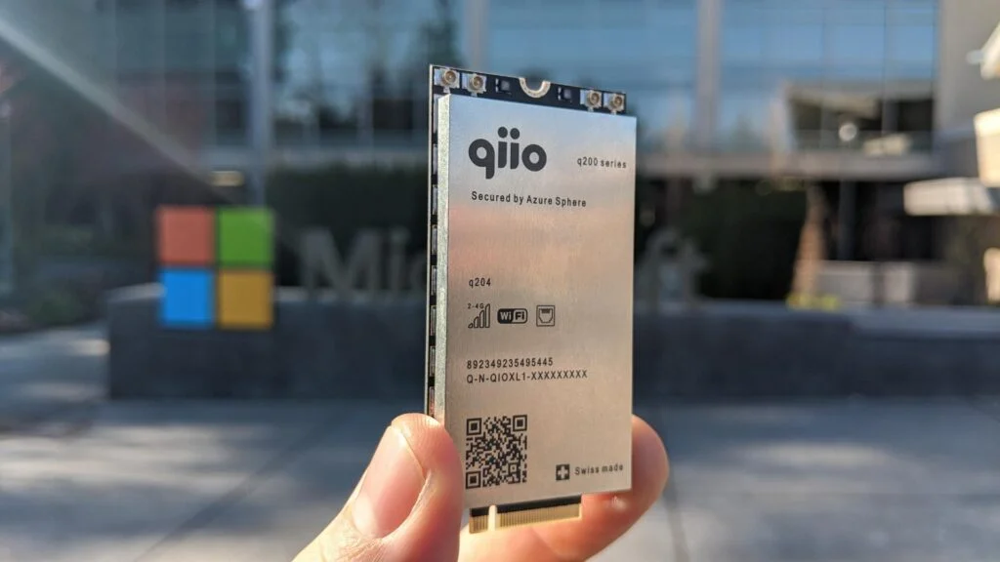

Umfassende Gerätesicherheit und Schutz vor Bedrohungen für IoT-Anwendungen
über Mobilfunk und Wi-Fi
Zürich und Nürnberg, 24. Februar 2020 – Zeitgleich mit der weltweiten Einführung von Microsoft Azure Sphere
bringt das Schweizer Unternehmen qiio eine wichtige Ergänzung von Azure Sphere für die Sicherheit von
mobilfunkbasierten IoT-Anwendungen auf den Markt. Vorgestellt wird das Produkt im Rahmen der Microsoft
Veranstaltung „IoT in Action“ in Nürnberg. qiio erweitert Azure Sphere mit Mobilfunk-Funktionen und bringt
somit die sicherste IoT-Lösung für diese Technologie auf den Markt. Das Produkt „q200 Guardian Module
powered by Azure Sphere“, kurz q200, ist die weltweit erste Lösung, die speziell für sichere
IoT-Mobilfunk-Verbindungen auf Basis von Microsofts Azure Sphere optimiert wurde. Die ersten
Implementierungen werden im April erwartet.
qiio ist ein auf Internet-of-Things-Anwendungen (IoT) spezialisierter Komplettanbieter mit Sitz in Zürich.
Das Unternehmen hat sich dem Ziel verschrieben, die Datenströme von Kunden, die von Maschinensensoren
bidirektional durch die Cloud geliefert werden, mittels ausgefeilter modularer Technologie sicher zu machen,
so dass auch Cybercrime-Attacken keine Chance haben, die Daten zu manipulieren.
Vorkonfigurierte Lösung durch mehr als 500 internationale Service-Verträge
Die Lösung q200 ist für sichere IoT-Verbindungen auf Basis von Microsofts Azure Sphere optimiert. Sie
schützt IoT-Geräte vor Cyber-Bedrohungen und stellt sicher, dass die über Mobilfunknetze in die Cloud
übertragenen Daten vertraulich, manipulationssicher und authentifiziert sind. Dazu wurde das „q200 Guardian
Module powered by Microsoft Azure Sphere“ mit Azure Sphere vorkonfiguriert. Maschinen- oder IoT-Sensordaten
verbinden sich über Mobilfunk oder Wi-Fi automatisch mit den Azure Sphere Security Services. Durch die
integrierte Netzwerkfähigkeit mit weltweit über 500 Service-Verträgen und kompletter
Service-Level-Integration in Azure wird ermöglicht, dass q200 in jedem Land der Welt out-of-the-box
eingesetzt werden kann. IoT-Daten stehen dann zur weiteren Verarbeitung und Analyse durch die
Cloud-basierten Verwaltungsdienste von qiio für das Management von Geräten, Anwendungen und Verbindungen
sicher und flexibel zur Verfügung.
Das „q200 Guardian Modul powered by Azure Sphere“ unterstützt die Mobilfunkstandards 2G, 3G, 4G,
Wi-Fi-Konnektivität sowie Ethernet. Es wird mit integriertem SIM-Chip mit über 500 Konnektivitätsverträgen
ausgeliefert. Das Modul misst 70×35 Millimeter und ist für den Betrieb in den USA, Europa, Asien und
Australien/Neuseeland zertifiziert.
Partnerschaft mit Microsoft
Felix Adamczyk, CEO von qiio, erklärt die Vorteile für die Anwender wie folgt: „Microsoft bietet
leistungsstarke IoT-Sicherheitstechnologie und Carrier-Grade-Cloud-Computing-Ressourcen. Durch das q200
Guardian Module powered by Azure Sphere liefern wir sichere End-to-End IoT-Lösungen, die von der globalen
Mobilfunkabdeckung profitieren.“
Anita Rao, Principal Program Manager Lead, Microsoft Azure Sphere, ergänzt: „Unsere Zielsetzung mit Azure
Sphere ist es, jedem Unternehmen zu ermöglichen, gesicherte und vertrauenswürdige IoT-Geräte zu schaffen und
miteinander zu verbinden. Wir sind überzeugt, dass Innovationen auf Sicherheit basieren müssen, um einen
dauerhaften Wert und Nutzen zu liefern. Innovative Partner wie qiio sind ein wichtiger Teil unserer Mission.
Die Zusammenarbeit ermöglicht es, unsere Sicherheitsexpertise mit ihren einzigartigen Fähigkeiten zu
kombinieren, um so die vielfältigen Kundenbedürfnisse abzudecken und zu erfüllen. Das q200-Modul von qiio
und die ergänzenden Dienstleistungen machen den komplexen Aufbau und die Verwaltung eines Netzwerks von IoT-
Mobilfunk-Geräten überflüssig. Dabei profitiert es gleichzeitig von der bislang unerreichten Sicherheit von
Azure Sphere, das auf neue Bedrohungen dynamisch reagiert.“
Verfügbarkeit
Das „q200 Guardian Module powered by Azure Sphere“ ist ab sofort erhältlich. Die ersten Implementierungen
werden im April erwartet.
Hintergrund
Die Zahl der an das Internet angeschlossenen Geräte geht in die Milliarden und steigt exponentiell an.
Internet-of-Things-Anwendungen (IoT) werden in jeder Branche eingesetzt. Die überwiegende Mehrheit der
aktuellen IoT-Lösungen steuern Prozesse im industriellen Einsatz wie zum Beispiel in der Produktion,
Fertigung und Energieversorgung. Das Ziel von Unternehmen und Organisationen ist es, ihre Effizienz durch
automatisierte Prozesse zu erhöhen. Die Sicherheit von IT-Infrastrukturen und Daten ist dabei von zentraler
Bedeutung.
Nun ist es diese Konnektivität, auf die die Industrie bei der Innovation angewiesen ist, und die Geräte,
Organisationen und Gesellschaften potenziell verheerenden Cybersicherheitsrisiken aussetzt. Azure Sphere ist
Microsofts Antwort auf diese Risiken. Azure Sphere baut auf bewährten Eigenschaften der Gerätesicherheit auf
und bietet umfassende Sicherheit und Schutz mit einem integrierten Ansatz, der gesicherte Hardware,
Betriebssysteme und Cloud-Dienste einschliesst. q200 von qiio bringt jetzt erstmals die Leistungsfähigkeit
von Azure Sphere auch auf Mobilfunkgeräte.
Über qiio
Die qiio AG bietet komplette Edge-to-Cloud-IoT-Lösungen einschliesslich Hardware, Software, globaler
Konnektivität, Cloud-Services und Betrieb. Kunden können durch qiio ihre IoT-Lösungen über ein
Online-Dashboard sicher verbinden, überwachen und steuern. Durch die Modularität der qiio-Produkte kann qiio
sogar individuelle Lösungen binnen acht Wochen ausliefern. Sitz von qiio ist Zürich, Schweiz.
Hinweise für die Redaktion
Druckfähige Pressebilder und ein Video finden Sie hier: https://bit.ly/38mf2bs
Alle Bilder, die Sie unter diesem Link finden, sind für die publizistische, nicht-kommerzielle Verwendung
honorarfrei. Bitte vermerken Sie: „Quelle: qiio.com“.